NOAA Fisheries - Southwest Fisheries Science Center - Ecosystem Sciences Division
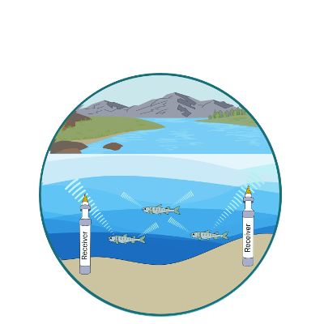
(CalFishTrack)
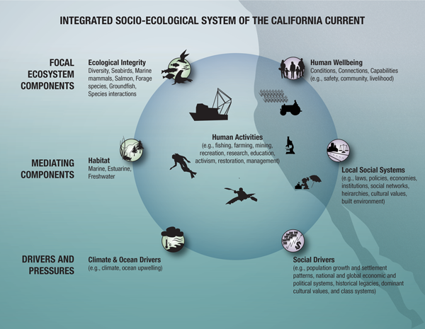
(CCIEA)
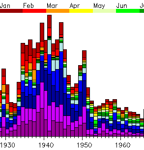
1928-2002
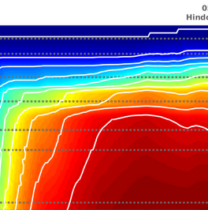
(CVTEMP)
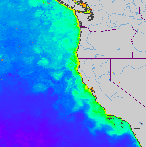
Providing near real-time satellite data for the coastal ocean
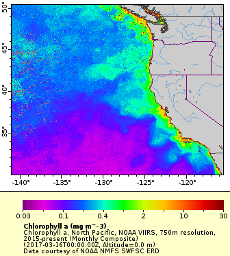
Easier access to scientific data
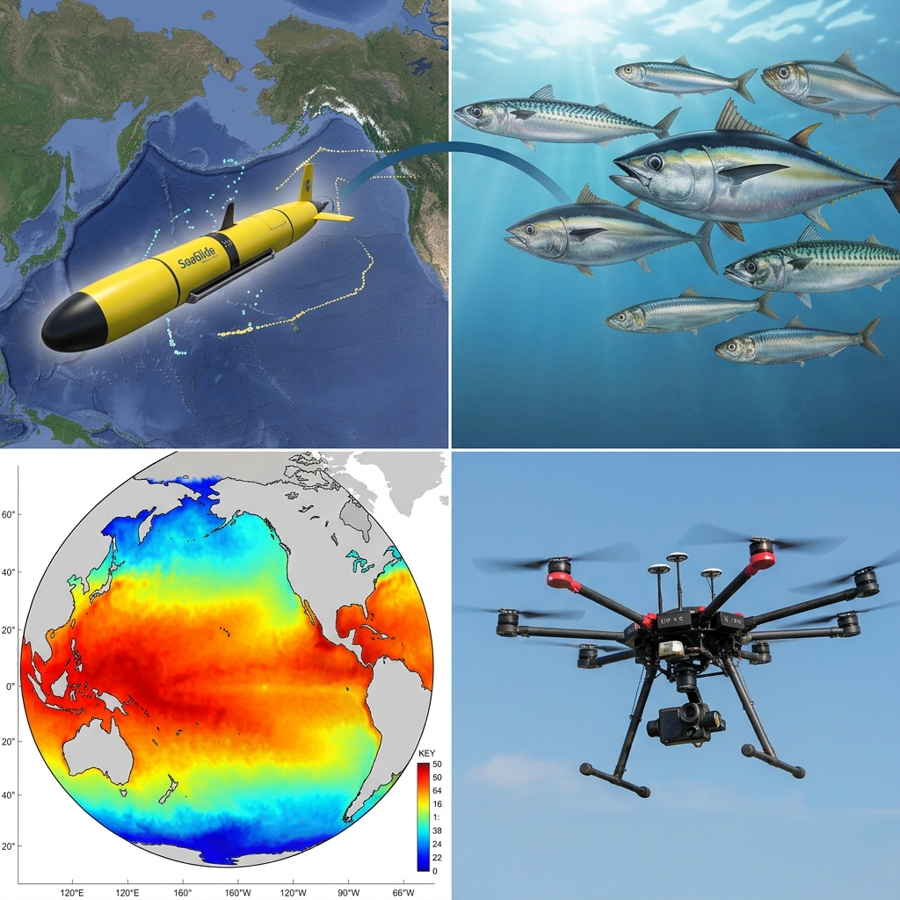
All about the data
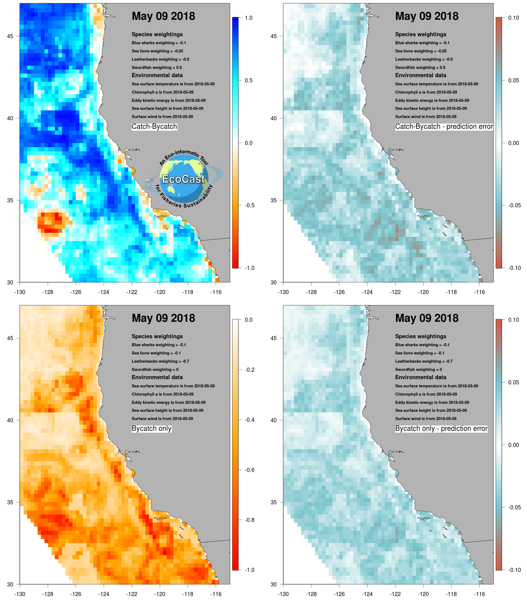
Assess trade-offs of bycatch and target catch in real-time
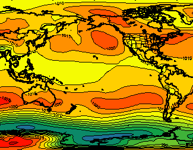
FNMOC produces operational forecasts of the state of the atmosphere and the ocean several times daily from which ERD derives a number of environmental data products and…
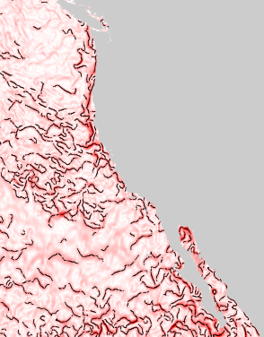
estimated from daily MUR SST
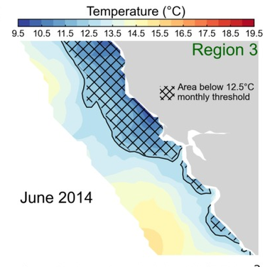
Index of upwelling habitat
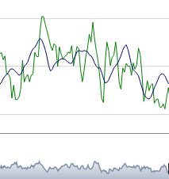
Interactive display of the current status of relevant West Coast indicators
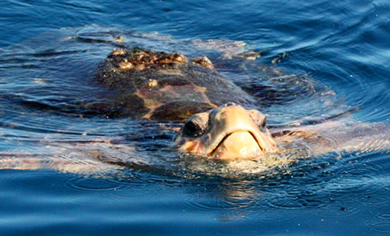
Temperature Observations To Avoid Loggerheads (TOTAL) - Reduce loggerhead bycatch in Southern California
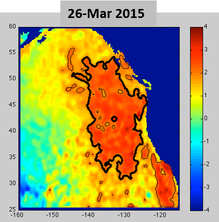
California Current Marine Heat Wave status
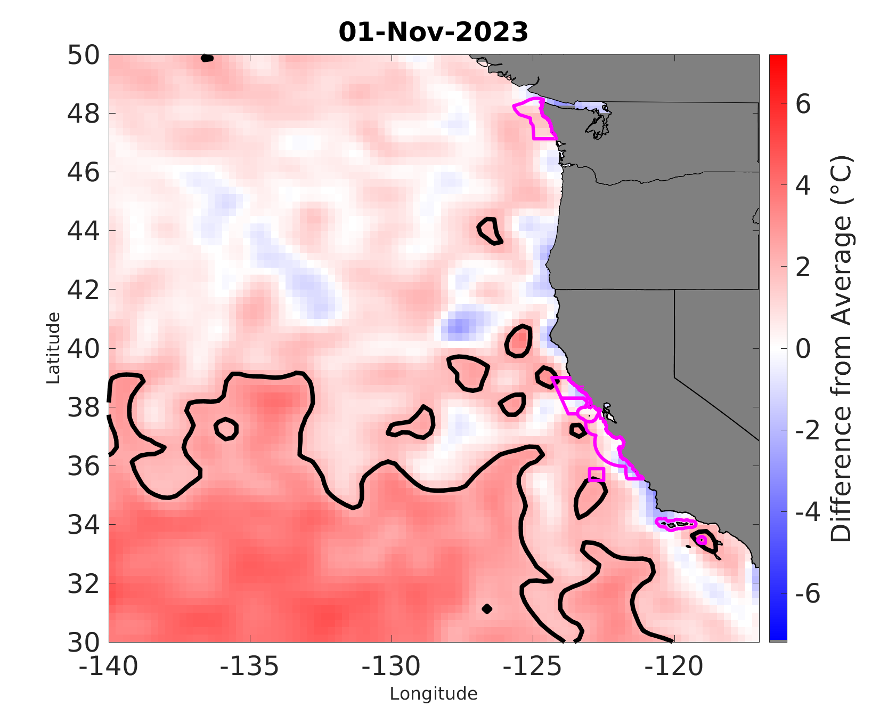
West Coast National Marine Sanctuaries
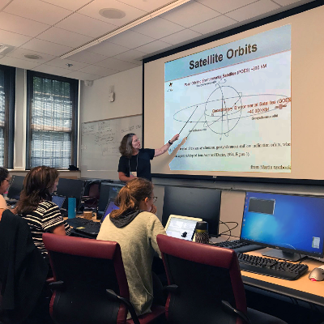
Learn how to use oceanographic satellite data in your work.
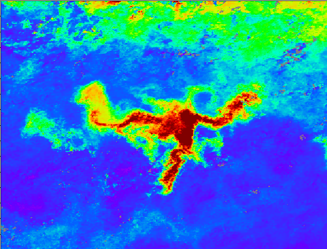
Chlorophyll blooms consistently develop in the oligotrophic North Pacific Subtropical Gyre (NPSG) in late summer. Both the timing and location of these blooms are enigmatic.
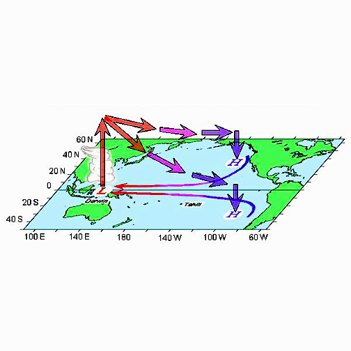
and related extratropical-based indices
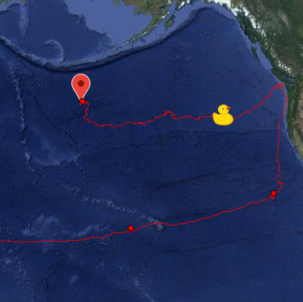
(OSCURS)
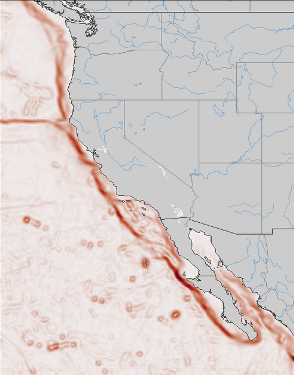
Estimates of the seafloor gradient off the West Coast of the United States using ETOPO or SRTM30Plus.
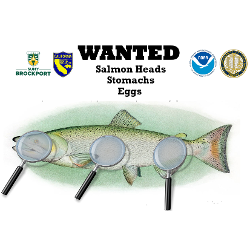
Researche on what is causing thiamine deficiency in salmon, and what might help remedy or mitigate its effects.
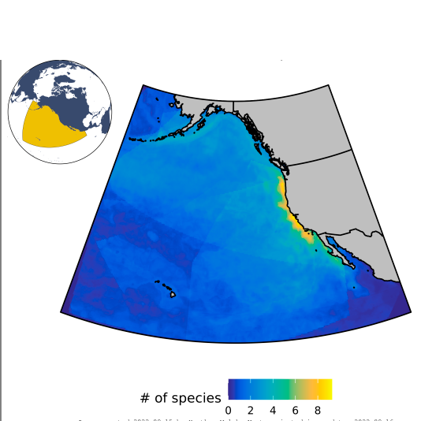
A dynamic ocean management tool that produces daily predictions of the distributions of 14 top predator species.
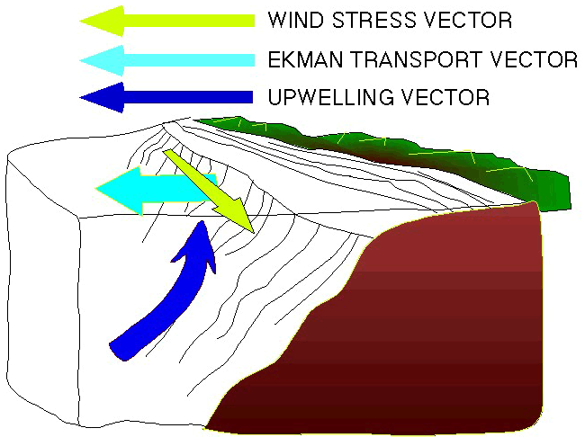
Information and Downloads (CUTI, BEUTI, Bakun)
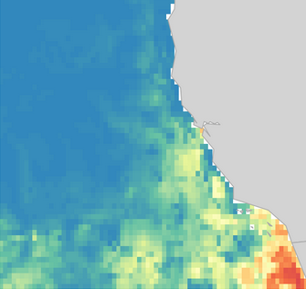
Help reduce human impacts on whales
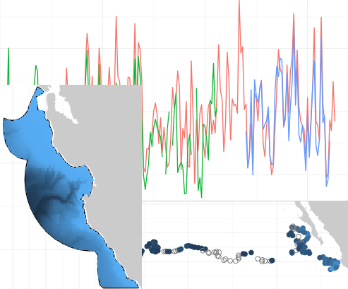
R and Matlab data extraction using ERDDAP™
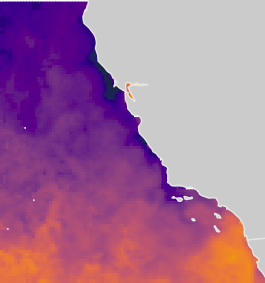
Visualize ERDDAP™ data